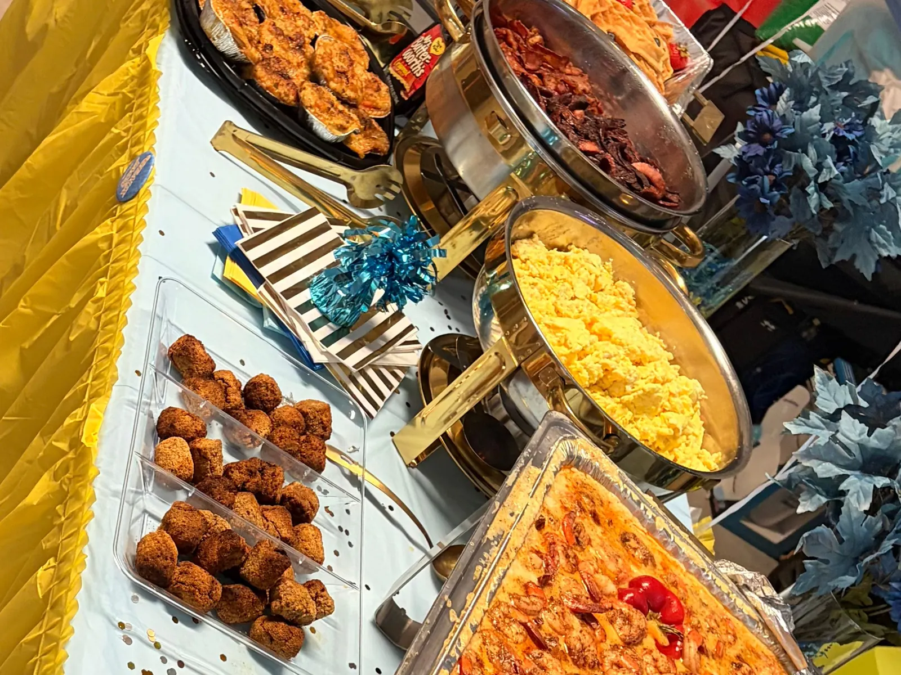

Holiday party season fills up fast in Houston. If you are the person in charge of feeding the team, the good news is that Cajun and Creole food suits an office party: it is warm, filling, easy to serve from a buffet line, and it gives people something better to talk about than another sandwich platter. Here is how to plan it with Bayou Fork Kitchen, and what to have ready before you reach out.
Book early, because December fills up
Large orders generally need at least one day’s notice, and full-service events need more. For a holiday party, do not wait until the week of. Pick your date, settle a rough headcount, and send your request as soon as you can, since the most popular lunch dates in the first three weeks of December go first for every caterer in town.
Pick the service style
- Drop-off trays. Food arrives ready to serve and your team sets up in the break room or conference room. Simplest for a casual lunch.
- Buffet with setup. We bring the food and set up the line, so it feels like a party and not just lunch.
- Pickup. Order ahead and collect from our Fondren Road kitchen if you are nearby.
Tell us which one fits your office and venue when you request a quote.
A menu that works for a mixed group
An office crowd has different tastes and different spice tolerances, so build a spread with a few anchors rather than one big dish:
- A gumbo or Crawfish Étouffée as the centerpiece. Not sure which? Read gumbo, jambalaya and étouffée, explained.
- Sweet Heat Wings by the tray for people who want something to grab and eat while they mingle.
- A milder option for guests who skip the heat, and sides like dirty rice and mac and cheese to round out the plate.
For ideas by group size, see our Cajun catering ideas for 10, 25 or 50 guests. Please tell us about allergies or dietary restrictions up front, and note that pork is used in our kitchen.
Not just lunch: breakfast and morning meetings
Some offices hold the holiday gathering in the morning, or add a breakfast before a year-end meeting. We can build that too. See the brunch spread we catered for a TSU vs. Southern game for the idea: Creole shrimp and grits, waffles, eggs and bacon.
What to send for a quote
- Your date and the time you want to eat
- An estimated headcount, rounded up if you are unsure
- The address, and whether it is an office, a venue or a home
- Drop-off, setup or pickup
- Any allergies, restrictions or a rough budget
Catering packages and tray pricing are still being finalized, so every quote is built around your specific event for now. We cater across Houston, Manvel, Pearland, Missouri City and Sugar Land.
Ready to book?
Request a catering quote through our online form, or call the kitchen at (832) 992-7335. Our hours are Monday to Saturday, 6:30am to 7:30pm, and we are closed Sundays. For more on how we plan events, read catering a private event in Houston.